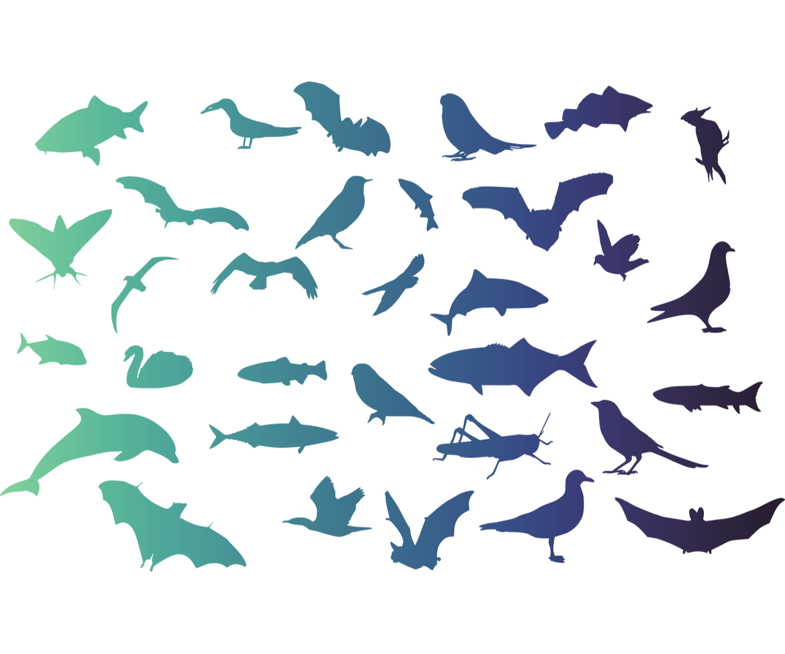

Daniel Floryan
Home
Research
Publications
CV
Menu
For presentations and proceedings, please see
my CV
.
Recent
Turbulent pipe flow response to a step change in surface roughness
Distributed flexibility in inertial swimmers
Connections between resonance and nonlinearity in swimming performance of a flexible heaving plate
Swimmers' wakes are not reliable indicators of swimming performance
Large-amplitude oscillations of foils for efficient propulsion
Scaling and performance of simultaneously heaving and pitching foils
Clarifying the relationship between efficiency and resonance for flexible inertial swimmers
Efficient cruising for swimming and flying animals is dictated by fluid drag

In preparation
D. Floryan and C. W. Rowley,
Adjoint optimization of fish swimming
, in preparation
A. J. Smits, D. Floryan, T. Van Buren, and C. W. Rowley,
Recent developments in understanding fish-like propulsion
, Progress in Aerospace Sciences, in preparation (
invited
)
D. Floryan and A. J. Smits,
Nonlinear damping in flexible swimmers
, in preparation
M. D. Graham and D. Floryan,
Exact coherent state Navier-Stokes solutions
, Annual Review of Fluid Mechanics, in preparation (
invited
)
D. Floryan and M. D. Graham,
Wavelet representation of turbulent flows
, in preparation
J. M. Floryan and D. Floryan,
Pumping by thermal waves
, in preparation
Under review
T. Van Buren, D. Floryan, L. Ding, L. H. O. Hellstrom, and A. J. Smits,
Turbulent pipe flow response to a step change in surface roughness
, under review
D. Floryan, T. Van Buren, and A. J. Smits,
Swimmers' wakes are not reliable indicators of swimming performance
, under review
Published
D. Floryan and C. W. Rowley,
Distributed flexibility in inertial swimmers
, to appear in Journal of Fluid Mechanics
A. Goza, D. Floryan, and C. W. Rowley,
Connections between resonance and nonlinearity in swimming performance of a flexible heaving plate
, to appear in Journal of Fluid Mechanics
D. Floryan, T. Van Buren, and A. J. Smits,
Large-amplitude oscillations of foils for efficient propulsion
, Physical Review Fluids (2019), 4(9), 093102
T. Van Buren, D. Floryan, and A. J. Smits,
Scaling and performance of simultaneously heaving and pitching foils
, AIAA Journal (2019), 57(9), 3666–3677 (
invited
)
D. Floryan and C. W. Rowley,
Clarifying the relationship between efficiency and resonance for flexible inertial swimmers
, Journal of Fluid Mechanics (2018), 853, 271–300
D. Floryan, T. Van Buren, and A. J. Smits,
Efficient cruising for swimming and flying animals is dictated by fluid drag
, Proceedings of the National Academy of Sciences (2018), 115(32), 8116–8118 (
from the cover
)
T. Van Buren, D. Floryan, N. Wei, and A. J. Smits,
Flow speed has little impact on propulsive characteristics of oscillating foils
, Physical Review Fluids (2018), 3(1), 013103
D. Floryan, T. Van Buren, and A. J. Smits,
Forces and energetics of intermittent swimming
, Acta Mechanica Sinica (2017), 33(4), 725–732 (
invited
)
D. Floryan, T. Van Buren, C. W. Rowley, and A. J. Smits,
Scaling the propulsive performance of heaving and pitching foils
, Journal of Fluid Mechanics (2017), 822, 386–397
T. Van Buren, D. Floryan, D. Quinn, and A. J. Smits,
Nonsinusoidal gaits for unsteady propulsion
, Physical Review Fluids (2017), 2(5), 053101
T. Van Buren, D. Floryan, D. Brunner, U. Senturk, and A. J. Smits,
Impact of trailing edge shape on the wake and propulsive performance of pitching panels
, Physical Review Fluids (2017), 2(1), 014702
S. T. M. Dawson, M. S. Hemati, D. Floryan, and C. W. Rowley,
Lift enhancement of high angle of attack airfoils using periodic pitching
, AIAA Paper 2016-2069
D. Floryan and J. M. Floryan,
Drag reduction in heated channels
, Journal of Fluid Mechanics (2015), 765, 353–395
J. W. Hofferth, R. A. Humble, D. Floryan, and W. S. Saric,
High-bandwidth optical measurements of the second-mode instability in a Mach 6 quiet tunnel
, AIAA Paper 2013-0378
M. Z. Hossain, D. Floryan, and J. M. Floryan,
Drag reduction due to spatial thermal modulations
, Journal of Fluid Mechanics (2012), 713, 398–419
Book chapters
T. Van Buren, D. Floryan, and A. J. Smits,
Bio-inspired underwater propulsors
, in Bio-inspired Design, editors L. Daniel and W. Soboyejo, Cambridge University Press, 2020